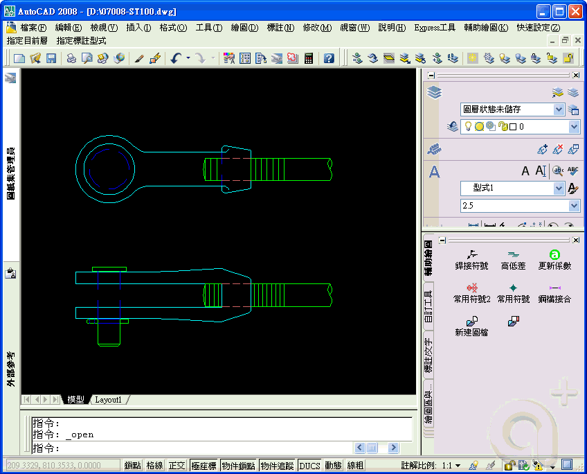

關於出圖預覽在沒有接印表機的狀況，可以使用AutoCAD本身預設的虛擬印表機即可正常的預覽，但是要選擇正確的筆寬、出圖比例、圖紙等相關設定，這樣才能在預覽時正常顯示。
以下提供3個標準虛擬印表機:
PublishToWeb JPG.pc3
PublishToWeb PNG.pc3
DWF6 ePlot.pc3
建議使用 DWF6 ePlot.pc3 輸出格式為DWF，它可輸出類似PDF個是的檔案。
※動態操作步驟如下，有問題請再提※
